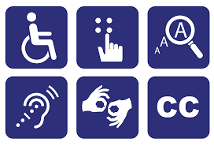

5 Dicas para Tornar seu Site acessível

Aqui agora há algumas dicas de como tornar seu site mais acessível:
- Incluir texto alternativo; Usar texto alternativo para imagens, logotipos, desenhos e outros itens. Sem o texto alternativo, os usuários do leitor de tela escutam apenas a palavra "imagem". Algumas imagens já têm um texto alternativo. Verifique ele representa o que você quer.
- Adicionar ou editar o texto alternativo em imagens inseridas; Selecione a imagem ou o logotipo. Acesse Mais opções de edição Mais e Adicionar texto alternativo. Digite o texto alternativo no campo "Descrição".
- Usar o alto contraste de cor; O alto contraste de cor facilita a leitura e a compreensão de textos e imagens. As diretrizes de acessibilidade para conteúdo na Web 2.0 (em inglês) recomendam uma proporção mínima de 4,5:1 para textos grandes e 7:1 para outros textos e imagens. Por exemplo, evite usar texto cinza-claro em um plano de fundo branco.
- Usar links com texto informativo; Os leitores de tela detectam links. Por isso, links com texto informativo são úteis. A melhor opção é usar o título da página como o texto do link. Por exemplo, no link para a página do seu perfil, use "meu perfil" como texto, não "clique aqui" ou o URL completo.
- Conferir o tamanho e o alinhamento do texto; Para facilitar a leitura do site, use texto grande e alinhado à esquerda sempre que possível. O texto justificado é mais difícil de ler devido ao espaço extra entre as palavras.